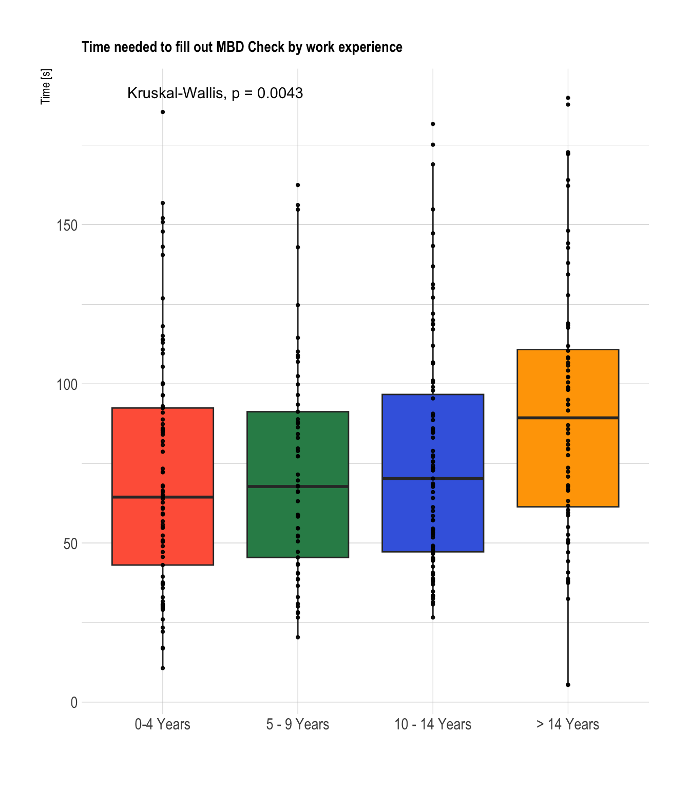

library(ggplot2)
library(ggplot2)
library(ggpubr)
library(ggbeeswarm)
library(tidyr)
library(hrbrthemes)
library(likert)
res_nr <- readRDS("answers1.RDS")
res2_num <- readRDS("answers2.RDS")6 User evaluation
6.1 Introduction
In this document the user evaluation is analyzed. Thirty-three surgeons, 29 anesthesiologists, and 24 hematologists participated in the survey. Twenty-four participants (27.9%) had 0-4 years of work experience, 16 (18.6%) had 5-9 years, 25 (29.1%) had 10-14 years, and 21 (24.4%) had 14+ years
6.2 Data loading
6.3 Time needed to fill out the case vignettes
Participants were presented with 4 different case vignettes. The time needed to fill out and interpret each of the case vignette was automatically tracked in the survey platform.
### By speciality
p1 <- ggplot(res_nr[which(res_nr$time <200),] ,aes(x=as.factor(spec), y=time, fill=as.factor(spec))) +
geom_boxplot(outlier.size = 0) +
scale_fill_manual(values = c("#FF6347","#2E8B57", "#4169E1"), labels = c("Surgeons", "Anesthesiologists", "Hematologists")) +
geom_beeswarm(color="black", size=0.8, alpha=0.9) +
theme_ipsum() +
theme(
legend.position="none",
plot.title = element_text(size=11)
) +
ggtitle("Time needed to fill out MBD Check by speciality") +
stat_compare_means()+
xlab("")+
scale_x_discrete(labels = c("Surgeons", "Anesthesiologists", "Hematologists"))+
ylab("Time [s]")
p1
### By seniority
p2 <- ggplot(res_nr[which(res_nr$time <200),] ,aes(x=as.factor(seniority), y=time, fill=as.factor(seniority))) +
geom_boxplot(outlier.size = 0) +
scale_fill_manual(values = c("#FF6347","#2E8B57", "#4169E1", "#FFA500"), labels = c("0-4 Years", "5 - 9 Years", "10 - 14 Years", "> 14 Years")) +
geom_point(color="black", size=0.8, alpha=0.9) +
theme_ipsum() +
theme(
legend.position="none",
plot.title = element_text(size=11)
) +
ggtitle("Time needed to fill out MBD Check by work experience") +
scale_x_discrete(labels = c("0-4 Years", "5 - 9 Years", "10 - 14 Years", "> 14 Years"))+
stat_compare_means()+
xlab("")+
ylab("Time [s]")
p2
6.4 System usability scale
Participants were asked to fill out the system usability scale (SUS).
likert_df <- res2_num[complete.cases(res2_num[,11:20]),c(1,22,11:20)]
colnames(likert_df) <- c("Group","Respondent",
"Q01: I can see myself regularly using MBD-Check",
"Q02: MBD-Check is unnecessarily complex",
"Q03: MBD-Check is easy to use",
"Q04: I think that I would need the support of a technical person to be able to use MBD-Check",
"Q05: I found the various functions (Calculating and interpreting the proabbility of a MBD) of MBD-Check to be well implemented.",
"Q06: I thought that there was too much inconsistency in MBD-Check",
"Q07: I would imagine most people would learne to use MBD-Check very quickly",
"Q08: I found MBD check very cumbersome to use",
"Q09: I felt very confident in using MBD-Check",
"Q10: I needed to learn a lot of things before I could get going with MBD-Check"
)
likert_df$Group <- factor(ifelse(likert_df$Group == 1, "Surgeons",
ifelse(likert_df$Group == 2, "Anesthesiologists", "Hematologists")),
levels = c("Hematologists", "Anesthesiologists", "Surgeons"))
lbs <- c("Disagree", "Somewhat disagree", "Neither agree nor disagree", "Somewhat agree", "Agree")
survey <- likert_df %>%
dplyr::mutate_if(is.character, factor) %>%
dplyr::mutate_if(is.numeric, factor, levels = 1:5, labels = lbs) %>%
drop_na() %>%
as.data.frame()
plot(likert(survey[,3:12], grouping = survey[,1]), ordered = TRUE, wrap = 90) 6.4.1 SUS score
Based on the answers the SUS score was calculated(Bangor, Kortum, and Miller 2008; Jordan et al. 1996). The median score was 82.5 and above the cut-off for excellent usability.
calculate_sus <- function(x){
# Calculates the System Usability Score (SUS) from a vector
# Input: x = Vector with the sus; needs to include columns sus1 - sus10
# Output score = SUS
sus_scale <- x[c("sus1","sus2","sus3","sus4","sus5",
"sus6", "sus7","sus8","sus9","sus10")] -1
score <- (sum(sus_scale[c(1,3,5,7,9)]-1)+sum(5-sus_scale[c(2,4,6,8,10)]))*2.5
return(score)
}
sus <- unlist(lapply(1:nrow(res2_num), function(x){calculate_sus(res2_num[x,])}))
res2_num$sus_g <- sus
summary(sus) Min. 1st Qu. Median Mean 3rd Qu. Max. NA's
45.00 72.50 82.50 80.53 90.00 100.00 10 ggplot(res2_num, aes(x = as.factor(spec), y = sus_g, color = seniority))+
geom_jitter(size = 3, height = 0, width = 0.3)+
geom_hline(yintercept = 68, linetype = "dashed")+
theme_pubr() +
theme(
plot.title = element_text(size=11),
axis.text.x = element_text(angle = 45, hjust = 1)
) +
xlab("")+
scale_x_discrete(labels = c("Surgeons", "Anesthesiologists", "Hematologists"))+
ylab("System Usability Score")+
ylim(c(0,100))+
scale_color_manual(values = c("#000000","#666666", "#5cb14a", "#2E8B57"),
labels = c("0-4 Years", "5 - 9 Years", "10 - 14 Years", "> 14 Years"))+
labs(color = "Years of work experience")
Bangor, Aaron, Philip T. Kortum, and James T. Miller. 2008. “An Empirical Evaluation of the System Usability Scale.” International Journal of HumanComputer Interaction 24 (6): 574–94. https://doi.org/10.1080/10447310802205776.
Jordan, Patrick W., B. Thomas, Ian Lyall McClelland, and Bernard Weerdmeester. 1996. Usability Evaluation In Industry. CRC Press.